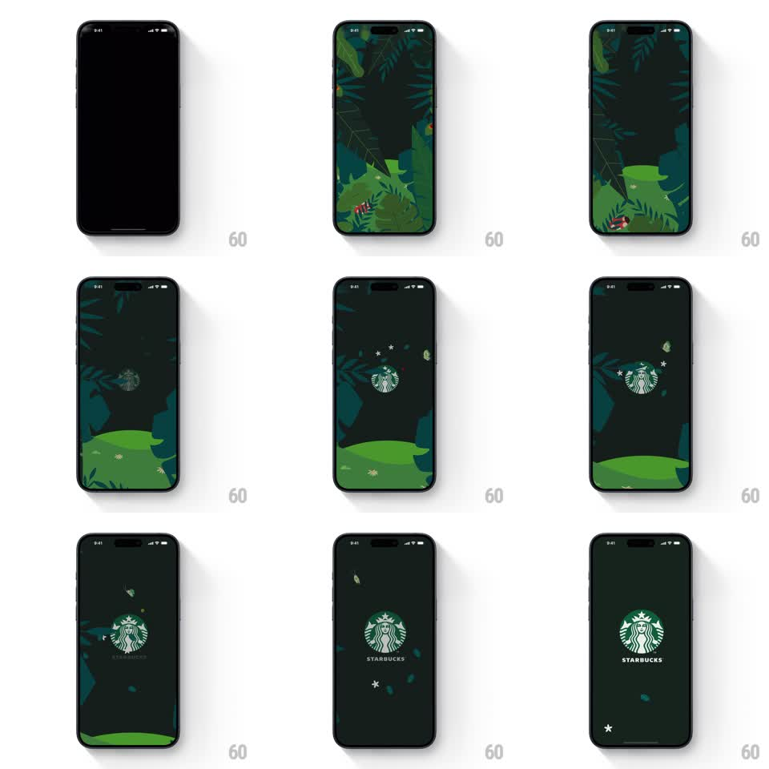

Media
Frame-by-frame

Rebuild this animation 1:1: Starbucks' classic splash - jungle leaves part on dark green, the siren logo scales up with twinkling stars, a butterfly flutters through, and the wordmark settles beneath.

Rebuild this animation 1:1: Starbucks' classic splash - jungle leaves part on dark green, the siren logo scales up with twinkling stars, a butterfly flutters through, and the wordmark settles beneath. ## Integration Integration: stack-agnostic spec - springs given as stiffness/damping, timed motions as duration + curve; map every value to your framework and animation library of choice. ## Scene Deep forest-green field ringed by layered jungle leaves and fronds (two greens plus a red flower accent). Center: the white-line siren logo growing from small to full, tiny star sparkles around it, a small butterfly that crosses the frame. End: clean dark green, siren centered, STARBUCKS wordmark below, leaves retreated to the edges. ## Motion spec Pattern: scaling logo reveal with botanical parting and a fluttering accent. - Leaves assemble from the edges (spring ~260/22, 80ms stagger) over a black-to-green fade (400ms). - The siren scales up at center (0.3 -> 1, spring ~240/16, 800ms) while 4-6 star sparkles twinkle around it (opacity + scale pulses, staggered, 300-500ms each). - A butterfly crosses on a curved path (bezier, 2.2s, wings flapping via scaleX oscillation 8Hz) and exits. - The leaves then retreat to the frame edges (500ms, ease-in-out) as the background deepens to flat green (400ms) and the wordmark fades in under the logo (300ms). ## Calibration - The logo's growth is the spine; leaves, stars, and butterfly are accompaniment - they never overlap the logo's face. - Butterfly path is a single graceful S-curve, not a zigzag. ## Reduced motion Logo fades in at full size (300ms); leaves static at edges; no butterfly. ## Don't miss - The siren is line-art white/green on dark - never a filled white disc. - The final resting state is quiet: logo, wordmark, edge leaves, nothing moving.